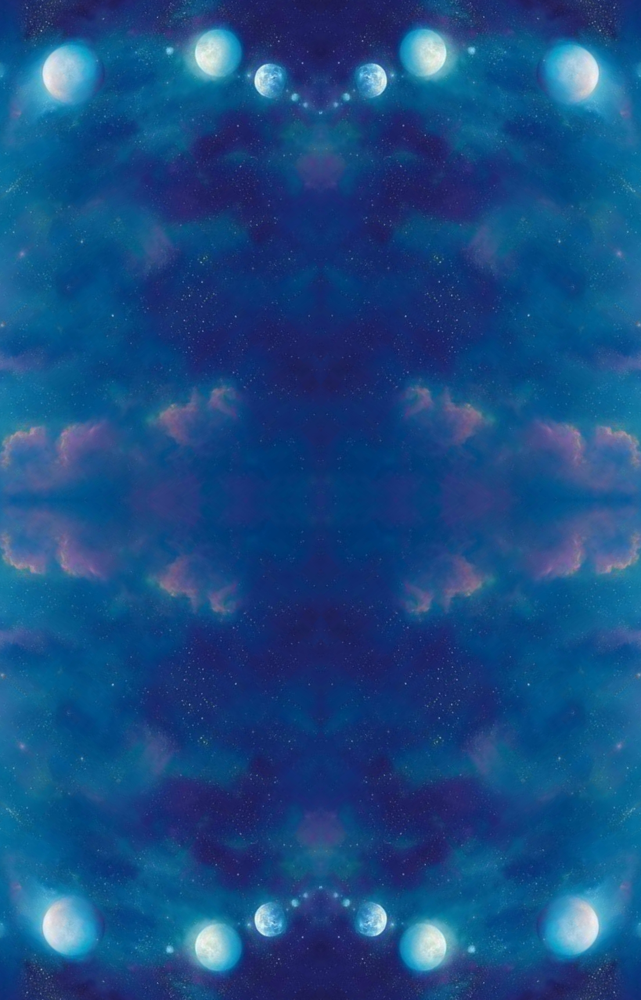

Oracle
Invoke Ancient Wisdom

Tap the Void to Inquire
The Path
The Great Initiation
Lore
The Eternal Scroll
Spreads
Sacred Geometry
Mastery
Your Soul's Evolution
0%
Initiation Complete
Spread
Hover to reveal • Click to interpret